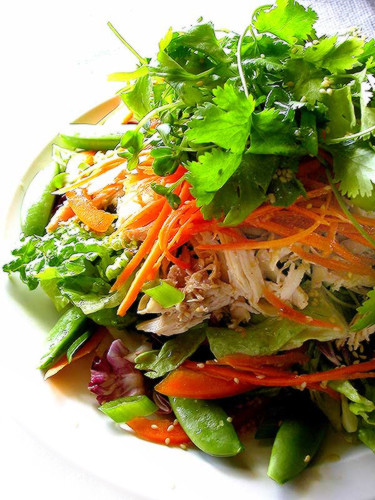

For Your Office
We will prepare the following meals for four people to many more. Unless otherwise noted or requested all meals are delivered in a “drop & go” arrangement, or with accompanying chefs and waiters on request.
Breakfast
- A quick breakfast snack platter before a meeting or training session
- A full buffet breakfast with hot & cold options, self served or with assistance from our staff
- An executive plated breakfast prepared at your premises by our chefs

Tea Time Snack
A little something during refreshment breaks to sustain your guests' energy levels.
Finger Lunch
Whether for a casual affair or an executive styled working luncheon, all our finger food items are served from elegant ceramic platters which are beautifully garnished. Make a selection from our wide variety of freshly made finger foods and design your perfect platter of deliciousness.
A Hot Meal / Buffet Lunch
Served from casserole dishes for small groups, or from chaffing dishes for larger groups our home styled freshly cooked meals will ‘hit the spot’. Finish these off with some fruit, a dessert or cheese & biscuits.
Plated Meals
For plated boardroom lunches, we can give you 3 – 5 course restaurant experience without the associated background noise and prying ears. We can supply all linen, cutlery, crockery and glassware if required, in a casual semblance or in a more executive style with sliver plate and cut crystal.
Events
Call us if you are planning a Year End Celebration for your staff, an intimate Cocktail Party for clients or a new product launch. We will work with you to produce a menu full of flavour and flair, leaving a memorable impression.
For Your Home
Take all the work out of entertaining at home and let us provide you with delicious fare, you rather spend more time mingling with your guests.
Your menu choices may be dropped off, or prepared in your kitchen by our chefs and served by friendly waiters.
Brunch
A delightful way to host a relaxed mid-morning feast, served from the patio or under a shady tree on your lawn.
Tea Party
Serve tea in the Garden – fluffy scones, light lemon chiffon, Pimms on ice, fresh lemonade - homemade seed bread made with yoghurt and crowned with smoked trout, perhaps egg and watercress tea sandwich quarters? Rich chocolate tarts, handpicked flowers, floral napkins and a selection of teas.
Miniature Meals
A wonderful way to entertain a larger gathering without the need for a conventional sit-down arrangement. Perfect little servings of your chosen entrées in hand-held bowls, thus allowing your guests to eat whilst they mingle. Two or three servings equate to a full main course.
This works well at cocktail dinners in addition to canapés and cocktail snacks which may not be substantial enough for your hungrier visitors.
Self Served Lunches, Suppers and Alfresco Dining
Food delivered to your door. Warm your heart with our delicious home style cooking and have herbed and spiced aromas fill your home. Tasty steaming casseroles, generous salads, oven roasted vegetables or a traditional braai….ensure to include some of our homemade farm style breads!
Served from casserole dishes for smaller get-togethers, or from chaffing dishes for larger gatherings - our freshly cooked meals will ‘hit the spot’.
Finish these off with some fruit, a dessert or cheese & biscuits.
A Special Occasion
A "dining out" experience in the comfort of your home. Whether it is canapés prepared in your kitchen by our chefs and served by roaming waiters, or a five course plated dinner, we lay it on in style.
We can also supply all linen, cutlery, crockery and glassware, in a casual semblance or in a more formal fashion with sliver plate and cut crystal.
Contact Us